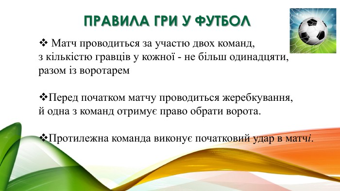

Основні правила
У футбол грають дві команди по 11 гравців, включаючи воротаря. М’яч можна пересувати ногами, головою або тулубом, але не руками (крім воротаря у штрафному майданчику). Гра триває два тайми по 45 хвилин з 15-хвилинною перервою. Головна мета — забити більше голів, ніж суперник. Переможець — команда з більшою кількістю голів. Якщо рахунок рівний, можливий нічийний результат або додатковий час, залежно від типу змагання. Гравці повинні дотримуватись правил фейр-плей, а за порушення можуть отримати попередження (жовту картку) або вилучення (червону картку).
